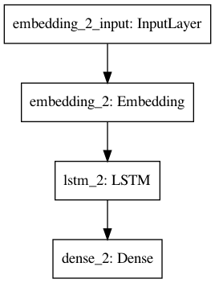

Neural Language Model¶
Question¶
Trigram-based Neural LM
Trigram Model¶
from numpy import array
from keras.preprocessing.text import Tokenizer
from keras.utils import to_categorical, plot_model
from keras.preprocessing.sequence import pad_sequences
from keras.models import Sequential
from keras.layers import Dense
from keras.layers import LSTM
from keras.layers import Embedding
# generate a sequence from a language model
def generate_seq(model, tokenizer, max_length, seed_text, n_words):
in_text = seed_text
# generate a fixed number of words
for _ in range(n_words):
# encode the text as integer
encoded = tokenizer.texts_to_sequences([in_text])[0]
# pre-pad sequences to a fixed length
encoded = pad_sequences([encoded], maxlen=max_length, padding='pre')
# predict probabilities for each word
yhat = model.predict_classes(encoded, verbose=0)
# map predicted word index to word
out_word = ''
for word, index in tokenizer.word_index.items():
if index == yhat:
out_word = word
break
# append to input
in_text += ' ' + out_word
return in_text
# source text
data = """ Jack and Jill went up the hill\n
To fetch a pail of water\n
Jack fell down and broke his crown\n
And Jill came tumbling after\n """
# integer encode sequences of words
tokenizer = Tokenizer()
tokenizer.fit_on_texts([data])
encoded = tokenizer.texts_to_sequences([data])[0]
# retrieve vocabulary size
vocab_size = len(tokenizer.word_index) + 1
print('Vocabulary Size: %d' % vocab_size)
# encode 2 words -> 1 word
sequences = list()
for i in range(2, len(encoded)):
sequence = encoded[i - 2:i + 1]
sequences.append(sequence)
print('Total Sequences: %d' % len(sequences))
# pad sequences
max_length = max([len(seq) for seq in sequences])
sequences = pad_sequences(sequences, maxlen=max_length, padding='pre')
print('Max Sequence Length: %d' % max_length)
# split into input and output elements
sequences = array(sequences)
X, y = sequences[:, :-1], sequences[:, -1]
y = to_categorical(y, num_classes=vocab_size)
# define model
model = Sequential()
model.add(Embedding(vocab_size, 10, input_length=max_length - 1))
model.add(LSTM(50))
model.add(Dense(vocab_size, activation='softmax'))
print(model.summary())
# compile network
model.compile(loss='categorical_crossentropy',
optimizer='adam',
metrics=['accuracy'])
# fit network
model.fit(X, y, epochs=500, verbose=2)
plot_model(model)
# evaluate model
print(generate_seq(model, tokenizer, max_length-1, 'Jack and', 5))
print(generate_seq(model, tokenizer, max_length-1, 'And Jill', 3))
print(generate_seq(model, tokenizer, max_length-1, 'fell down', 5))
print(generate_seq(model, tokenizer, max_length-1, 'pail of', 5))
Question 2¶
Line-based LM
Line-based Model¶
from numpy import array
from keras.preprocessing.text import Tokenizer
from keras.utils import to_categorical, plot_model
from keras.preprocessing.sequence import pad_sequences
from keras.models import Sequential
from keras.layers import Dense
from keras.layers import LSTM
from keras.layers import Embedding
# generate a sequence from a language model
def generate_seq(model, tokenizer, max_length, seed_text, n_words):
in_text = seed_text
# generate a fixed number of words
for _ in range(n_words):
# encode the text as integer
encoded = tokenizer.texts_to_sequences([in_text])[0]
# pre-pad sequences to a fixed length
encoded = pad_sequences([encoded], maxlen=max_length, padding='pre')
# predict probabilities for each word
yhat = model.predict_classes(encoded, verbose=0)
# map predicted word index to word
out_word = ''
for word, index in tokenizer.word_index.items():
if index == yhat:
out_word = word
break
# append to input
in_text += ' ' + out_word
return in_text
# source text
data = """ Jack and Jill went up the hill\n
To fetch a pail of water\n
Jack fell down and broke his crown\n
And Jill came tumbling after\n """
# prepare the tokenizer on the source text
tokenizer = Tokenizer(oov_token=1) ## specify the word id for unknown words
tokenizer.fit_on_texts([data])
# determine the vocabulary size
## zero index is reserved in keras as the padding token (+1) and one unknown word id
vocab_size = len(tokenizer.word_index) + 1
print('Vocabulary Size: %d' % vocab_size)
# create line-based sequences
sequences = list()
for line in data.split('\n'):
encoded = tokenizer.texts_to_sequences([line])[0]
## For each line, after converting words into indexes
## prepare sequences for training
## given a line, w1,w2,w3,w4
## create input sequences:
## w1,w2
## w1,w2,w3
## w1,w2,w3,w4
for i in range(1, len(encoded)):
sequence = encoded[:i + 1]
sequences.append(sequence)
print('Total Sequences: %d' % len(sequences))
Vocabulary Size: 23
Total Sequences: 21
# pad input sequences
max_length = max([len(seq) for seq in sequences])
sequences = pad_sequences(sequences, maxlen=max_length, padding='pre')
print('Max Sequence Length: %d' % max_length)
# split into input and output elements
sequences = array(sequences)
X, y = sequences[:, :-1], sequences[:, -1]
y = to_categorical(y, num_classes=vocab_size)
# define model
model = Sequential()
model.add(Embedding(vocab_size, 10, input_length=max_length - 1))
model.add(LSTM(50))
model.add(Dense(vocab_size, activation='softmax'))
print(model.summary())
# compile network
model.compile(loss='categorical_crossentropy',
optimizer='adam',
metrics=['accuracy'])
# fit network
model.fit(X, y, epochs=500, verbose=2)
Max Sequence Length: 7
Model: "sequential_2"
_________________________________________________________________
Layer (type) Output Shape Param #
=================================================================
embedding_2 (Embedding) (None, 6, 10) 230
_________________________________________________________________
lstm_2 (LSTM) (None, 50) 12200
_________________________________________________________________
dense_2 (Dense) (None, 23) 1173
=================================================================
Total params: 13,603
Trainable params: 13,603
Non-trainable params: 0
_________________________________________________________________
None
Epoch 1/500
1/1 - 0s - loss: 3.1351 - accuracy: 0.0952
Epoch 2/500
1/1 - 0s - loss: 3.1335 - accuracy: 0.1905
Epoch 3/500
1/1 - 0s - loss: 3.1319 - accuracy: 0.1905
Epoch 4/500
1/1 - 0s - loss: 3.1302 - accuracy: 0.1429
Epoch 5/500
1/1 - 0s - loss: 3.1286 - accuracy: 0.1429
Epoch 6/500
1/1 - 0s - loss: 3.1269 - accuracy: 0.0952
Epoch 7/500
1/1 - 0s - loss: 3.1251 - accuracy: 0.0952
Epoch 8/500
1/1 - 0s - loss: 3.1233 - accuracy: 0.0952
Epoch 9/500
1/1 - 0s - loss: 3.1214 - accuracy: 0.0952
Epoch 10/500
1/1 - 0s - loss: 3.1195 - accuracy: 0.0952
Epoch 11/500
1/1 - 0s - loss: 3.1174 - accuracy: 0.0952
Epoch 12/500
1/1 - 0s - loss: 3.1153 - accuracy: 0.0952
Epoch 13/500
1/1 - 0s - loss: 3.1130 - accuracy: 0.0952
Epoch 14/500
1/1 - 0s - loss: 3.1106 - accuracy: 0.0952
Epoch 15/500
1/1 - 0s - loss: 3.1081 - accuracy: 0.0952
Epoch 16/500
1/1 - 0s - loss: 3.1054 - accuracy: 0.0952
Epoch 17/500
1/1 - 0s - loss: 3.1026 - accuracy: 0.0952
Epoch 18/500
1/1 - 0s - loss: 3.0995 - accuracy: 0.0952
Epoch 19/500
1/1 - 0s - loss: 3.0963 - accuracy: 0.0952
Epoch 20/500
1/1 - 0s - loss: 3.0928 - accuracy: 0.0952
Epoch 21/500
1/1 - 0s - loss: 3.0890 - accuracy: 0.0952
Epoch 22/500
1/1 - 0s - loss: 3.0850 - accuracy: 0.0952
Epoch 23/500
1/1 - 0s - loss: 3.0806 - accuracy: 0.0952
Epoch 24/500
1/1 - 0s - loss: 3.0760 - accuracy: 0.0952
Epoch 25/500
1/1 - 0s - loss: 3.0709 - accuracy: 0.0952
Epoch 26/500
1/1 - 0s - loss: 3.0654 - accuracy: 0.0952
Epoch 27/500
1/1 - 0s - loss: 3.0595 - accuracy: 0.0952
Epoch 28/500
1/1 - 0s - loss: 3.0531 - accuracy: 0.0952
Epoch 29/500
1/1 - 0s - loss: 3.0462 - accuracy: 0.0952
Epoch 30/500
1/1 - 0s - loss: 3.0387 - accuracy: 0.0952
Epoch 31/500
1/1 - 0s - loss: 3.0306 - accuracy: 0.0952
Epoch 32/500
1/1 - 0s - loss: 3.0218 - accuracy: 0.0952
Epoch 33/500
1/1 - 0s - loss: 3.0124 - accuracy: 0.0952
Epoch 34/500
1/1 - 0s - loss: 3.0023 - accuracy: 0.0952
Epoch 35/500
1/1 - 0s - loss: 2.9915 - accuracy: 0.0952
Epoch 36/500
1/1 - 0s - loss: 2.9800 - accuracy: 0.0952
Epoch 37/500
1/1 - 0s - loss: 2.9679 - accuracy: 0.0952
Epoch 38/500
1/1 - 0s - loss: 2.9554 - accuracy: 0.0952
Epoch 39/500
1/1 - 0s - loss: 2.9426 - accuracy: 0.0952
Epoch 40/500
1/1 - 0s - loss: 2.9297 - accuracy: 0.0952
Epoch 41/500
1/1 - 0s - loss: 2.9171 - accuracy: 0.0952
Epoch 42/500
1/1 - 0s - loss: 2.9051 - accuracy: 0.0952
Epoch 43/500
1/1 - 0s - loss: 2.8939 - accuracy: 0.0952
Epoch 44/500
1/1 - 0s - loss: 2.8837 - accuracy: 0.0952
Epoch 45/500
1/1 - 0s - loss: 2.8743 - accuracy: 0.0952
Epoch 46/500
1/1 - 0s - loss: 2.8652 - accuracy: 0.0952
Epoch 47/500
1/1 - 0s - loss: 2.8559 - accuracy: 0.0952
Epoch 48/500
1/1 - 0s - loss: 2.8460 - accuracy: 0.0952
Epoch 49/500
1/1 - 0s - loss: 2.8352 - accuracy: 0.0952
Epoch 50/500
1/1 - 0s - loss: 2.8236 - accuracy: 0.0952
Epoch 51/500
1/1 - 0s - loss: 2.8114 - accuracy: 0.0952
Epoch 52/500
1/1 - 0s - loss: 2.7989 - accuracy: 0.0952
Epoch 53/500
1/1 - 0s - loss: 2.7863 - accuracy: 0.1429
Epoch 54/500
1/1 - 0s - loss: 2.7737 - accuracy: 0.1429
Epoch 55/500
1/1 - 0s - loss: 2.7610 - accuracy: 0.1429
Epoch 56/500
1/1 - 0s - loss: 2.7482 - accuracy: 0.1429
Epoch 57/500
1/1 - 0s - loss: 2.7350 - accuracy: 0.1905
Epoch 58/500
1/1 - 0s - loss: 2.7213 - accuracy: 0.1905
Epoch 59/500
1/1 - 0s - loss: 2.7067 - accuracy: 0.1905
Epoch 60/500
1/1 - 0s - loss: 2.6914 - accuracy: 0.1905
Epoch 61/500
1/1 - 0s - loss: 2.6754 - accuracy: 0.1905
Epoch 62/500
1/1 - 0s - loss: 2.6587 - accuracy: 0.1905
Epoch 63/500
1/1 - 0s - loss: 2.6416 - accuracy: 0.1905
Epoch 64/500
1/1 - 0s - loss: 2.6241 - accuracy: 0.1905
Epoch 65/500
1/1 - 0s - loss: 2.6062 - accuracy: 0.2381
Epoch 66/500
1/1 - 0s - loss: 2.5878 - accuracy: 0.2381
Epoch 67/500
1/1 - 0s - loss: 2.5688 - accuracy: 0.2381
Epoch 68/500
1/1 - 0s - loss: 2.5490 - accuracy: 0.2857
Epoch 69/500
1/1 - 0s - loss: 2.5282 - accuracy: 0.2857
Epoch 70/500
1/1 - 0s - loss: 2.5065 - accuracy: 0.2857
Epoch 71/500
1/1 - 0s - loss: 2.4840 - accuracy: 0.2857
Epoch 72/500
1/1 - 0s - loss: 2.4610 - accuracy: 0.2857
Epoch 73/500
1/1 - 0s - loss: 2.4374 - accuracy: 0.2857
Epoch 74/500
1/1 - 0s - loss: 2.4132 - accuracy: 0.2857
Epoch 75/500
1/1 - 0s - loss: 2.3883 - accuracy: 0.3810
Epoch 76/500
1/1 - 0s - loss: 2.3626 - accuracy: 0.4286
Epoch 77/500
1/1 - 0s - loss: 2.3362 - accuracy: 0.4286
Epoch 78/500
1/1 - 0s - loss: 2.3093 - accuracy: 0.4286
Epoch 79/500
1/1 - 0s - loss: 2.2821 - accuracy: 0.4286
Epoch 80/500
1/1 - 0s - loss: 2.2544 - accuracy: 0.4762
Epoch 81/500
1/1 - 0s - loss: 2.2263 - accuracy: 0.4762
Epoch 82/500
1/1 - 0s - loss: 2.1977 - accuracy: 0.4762
Epoch 83/500
1/1 - 0s - loss: 2.1689 - accuracy: 0.4762
Epoch 84/500
1/1 - 0s - loss: 2.1399 - accuracy: 0.4762
Epoch 85/500
1/1 - 0s - loss: 2.1108 - accuracy: 0.4286
Epoch 86/500
1/1 - 0s - loss: 2.0815 - accuracy: 0.4286
Epoch 87/500
1/1 - 0s - loss: 2.0521 - accuracy: 0.4762
Epoch 88/500
1/1 - 0s - loss: 2.0230 - accuracy: 0.4762
Epoch 89/500
1/1 - 0s - loss: 1.9939 - accuracy: 0.4762
Epoch 90/500
1/1 - 0s - loss: 1.9650 - accuracy: 0.4286
Epoch 91/500
1/1 - 0s - loss: 1.9365 - accuracy: 0.4286
Epoch 92/500
1/1 - 0s - loss: 1.9084 - accuracy: 0.4762
Epoch 93/500
1/1 - 0s - loss: 1.8806 - accuracy: 0.4762
Epoch 94/500
1/1 - 0s - loss: 1.8533 - accuracy: 0.4762
Epoch 95/500
1/1 - 0s - loss: 1.8267 - accuracy: 0.4762
Epoch 96/500
1/1 - 0s - loss: 1.8010 - accuracy: 0.4762
Epoch 97/500
1/1 - 0s - loss: 1.7764 - accuracy: 0.4762
Epoch 98/500
1/1 - 0s - loss: 1.7527 - accuracy: 0.5238
Epoch 99/500
1/1 - 0s - loss: 1.7298 - accuracy: 0.5714
Epoch 100/500
1/1 - 0s - loss: 1.7078 - accuracy: 0.6190
Epoch 101/500
1/1 - 0s - loss: 1.6864 - accuracy: 0.5714
Epoch 102/500
1/1 - 0s - loss: 1.6656 - accuracy: 0.5238
Epoch 103/500
1/1 - 0s - loss: 1.6453 - accuracy: 0.5238
Epoch 104/500
1/1 - 0s - loss: 1.6257 - accuracy: 0.5238
Epoch 105/500
1/1 - 0s - loss: 1.6064 - accuracy: 0.5238
Epoch 106/500
1/1 - 0s - loss: 1.5876 - accuracy: 0.5714
Epoch 107/500
1/1 - 0s - loss: 1.5692 - accuracy: 0.5714
Epoch 108/500
1/1 - 0s - loss: 1.5514 - accuracy: 0.6190
Epoch 109/500
1/1 - 0s - loss: 1.5341 - accuracy: 0.6190
Epoch 110/500
1/1 - 0s - loss: 1.5174 - accuracy: 0.6190
Epoch 111/500
1/1 - 0s - loss: 1.5012 - accuracy: 0.6190
Epoch 112/500
1/1 - 0s - loss: 1.4856 - accuracy: 0.6190
Epoch 113/500
1/1 - 0s - loss: 1.4705 - accuracy: 0.6190
Epoch 114/500
1/1 - 0s - loss: 1.4558 - accuracy: 0.6190
Epoch 115/500
1/1 - 0s - loss: 1.4416 - accuracy: 0.5714
Epoch 116/500
1/1 - 0s - loss: 1.4279 - accuracy: 0.6190
Epoch 117/500
1/1 - 0s - loss: 1.4145 - accuracy: 0.6190
Epoch 118/500
1/1 - 0s - loss: 1.4016 - accuracy: 0.6190
Epoch 119/500
1/1 - 0s - loss: 1.3889 - accuracy: 0.5714
Epoch 120/500
1/1 - 0s - loss: 1.3766 - accuracy: 0.5714
Epoch 121/500
1/1 - 0s - loss: 1.3646 - accuracy: 0.5714
Epoch 122/500
1/1 - 0s - loss: 1.3527 - accuracy: 0.5714
Epoch 123/500
1/1 - 0s - loss: 1.3412 - accuracy: 0.5714
Epoch 124/500
1/1 - 0s - loss: 1.3298 - accuracy: 0.6190
Epoch 125/500
1/1 - 0s - loss: 1.3187 - accuracy: 0.6667
Epoch 126/500
1/1 - 0s - loss: 1.3077 - accuracy: 0.6667
Epoch 127/500
1/1 - 0s - loss: 1.2968 - accuracy: 0.6190
Epoch 128/500
1/1 - 0s - loss: 1.2861 - accuracy: 0.6190
Epoch 129/500
1/1 - 0s - loss: 1.2755 - accuracy: 0.6190
Epoch 130/500
1/1 - 0s - loss: 1.2651 - accuracy: 0.6190
Epoch 131/500
1/1 - 0s - loss: 1.2549 - accuracy: 0.6190
Epoch 132/500
1/1 - 0s - loss: 1.2448 - accuracy: 0.6190
Epoch 133/500
1/1 - 0s - loss: 1.2349 - accuracy: 0.6190
Epoch 134/500
1/1 - 0s - loss: 1.2253 - accuracy: 0.6190
Epoch 135/500
1/1 - 0s - loss: 1.2160 - accuracy: 0.6190
Epoch 136/500
1/1 - 0s - loss: 1.2066 - accuracy: 0.6667
Epoch 137/500
1/1 - 0s - loss: 1.1966 - accuracy: 0.6190
Epoch 138/500
1/1 - 0s - loss: 1.1866 - accuracy: 0.6667
Epoch 139/500
1/1 - 0s - loss: 1.1777 - accuracy: 0.6667
Epoch 140/500
1/1 - 0s - loss: 1.1688 - accuracy: 0.6190
Epoch 141/500
1/1 - 0s - loss: 1.1591 - accuracy: 0.6667
Epoch 142/500
1/1 - 0s - loss: 1.1499 - accuracy: 0.6667
Epoch 143/500
1/1 - 0s - loss: 1.1413 - accuracy: 0.6667
Epoch 144/500
1/1 - 0s - loss: 1.1322 - accuracy: 0.7143
Epoch 145/500
1/1 - 0s - loss: 1.1229 - accuracy: 0.7143
Epoch 146/500
1/1 - 0s - loss: 1.1143 - accuracy: 0.7143
Epoch 147/500
1/1 - 0s - loss: 1.1057 - accuracy: 0.7143
Epoch 148/500
1/1 - 0s - loss: 1.0969 - accuracy: 0.7143
Epoch 149/500
1/1 - 0s - loss: 1.0882 - accuracy: 0.7143
Epoch 150/500
1/1 - 0s - loss: 1.0801 - accuracy: 0.7143
Epoch 151/500
1/1 - 0s - loss: 1.0719 - accuracy: 0.7619
Epoch 152/500
1/1 - 0s - loss: 1.0635 - accuracy: 0.7143
Epoch 153/500
1/1 - 0s - loss: 1.0554 - accuracy: 0.8095
Epoch 154/500
1/1 - 0s - loss: 1.0476 - accuracy: 0.8095
Epoch 155/500
1/1 - 0s - loss: 1.0397 - accuracy: 0.8095
Epoch 156/500
1/1 - 0s - loss: 1.0317 - accuracy: 0.8095
Epoch 157/500
1/1 - 0s - loss: 1.0238 - accuracy: 0.8095
Epoch 158/500
1/1 - 0s - loss: 1.0161 - accuracy: 0.8095
Epoch 159/500
1/1 - 0s - loss: 1.0084 - accuracy: 0.8095
Epoch 160/500
1/1 - 0s - loss: 1.0007 - accuracy: 0.8095
Epoch 161/500
1/1 - 0s - loss: 0.9929 - accuracy: 0.8095
Epoch 162/500
1/1 - 0s - loss: 0.9853 - accuracy: 0.8095
Epoch 163/500
1/1 - 0s - loss: 0.9778 - accuracy: 0.8095
Epoch 164/500
1/1 - 0s - loss: 0.9704 - accuracy: 0.8095
Epoch 165/500
1/1 - 0s - loss: 0.9629 - accuracy: 0.8095
Epoch 166/500
1/1 - 0s - loss: 0.9554 - accuracy: 0.8095
Epoch 167/500
1/1 - 0s - loss: 0.9480 - accuracy: 0.8095
Epoch 168/500
1/1 - 0s - loss: 0.9407 - accuracy: 0.8095
Epoch 169/500
1/1 - 0s - loss: 0.9335 - accuracy: 0.8095
Epoch 170/500
1/1 - 0s - loss: 0.9263 - accuracy: 0.8095
Epoch 171/500
1/1 - 0s - loss: 0.9191 - accuracy: 0.8095
Epoch 172/500
1/1 - 0s - loss: 0.9119 - accuracy: 0.8095
Epoch 173/500
1/1 - 0s - loss: 0.9048 - accuracy: 0.8095
Epoch 174/500
1/1 - 0s - loss: 0.8977 - accuracy: 0.8095
Epoch 175/500
1/1 - 0s - loss: 0.8906 - accuracy: 0.8095
Epoch 176/500
1/1 - 0s - loss: 0.8836 - accuracy: 0.8095
Epoch 177/500
1/1 - 0s - loss: 0.8766 - accuracy: 0.8571
Epoch 178/500
1/1 - 0s - loss: 0.8697 - accuracy: 0.8571
Epoch 179/500
1/1 - 0s - loss: 0.8628 - accuracy: 0.8571
Epoch 180/500
1/1 - 0s - loss: 0.8560 - accuracy: 0.8571
Epoch 181/500
1/1 - 0s - loss: 0.8492 - accuracy: 0.8571
Epoch 182/500
1/1 - 0s - loss: 0.8425 - accuracy: 0.8571
Epoch 183/500
1/1 - 0s - loss: 0.8359 - accuracy: 0.8571
Epoch 184/500
1/1 - 0s - loss: 0.8292 - accuracy: 0.8571
Epoch 185/500
1/1 - 0s - loss: 0.8226 - accuracy: 0.8571
Epoch 186/500
1/1 - 0s - loss: 0.8160 - accuracy: 0.8571
Epoch 187/500
1/1 - 0s - loss: 0.8095 - accuracy: 0.8571
Epoch 188/500
1/1 - 0s - loss: 0.8030 - accuracy: 0.8571
Epoch 189/500
1/1 - 0s - loss: 0.7966 - accuracy: 0.8571
Epoch 190/500
1/1 - 0s - loss: 0.7904 - accuracy: 0.8571
Epoch 191/500
1/1 - 0s - loss: 0.7842 - accuracy: 0.8571
Epoch 192/500
1/1 - 0s - loss: 0.7780 - accuracy: 0.8571
Epoch 193/500
1/1 - 0s - loss: 0.7720 - accuracy: 0.8571
Epoch 194/500
1/1 - 0s - loss: 0.7661 - accuracy: 0.8571
Epoch 195/500
1/1 - 0s - loss: 0.7604 - accuracy: 0.8571
Epoch 196/500
1/1 - 0s - loss: 0.7550 - accuracy: 0.8571
Epoch 197/500
1/1 - 0s - loss: 0.7499 - accuracy: 0.8571
Epoch 198/500
1/1 - 0s - loss: 0.7452 - accuracy: 0.8571
Epoch 199/500
1/1 - 0s - loss: 0.7392 - accuracy: 0.8571
Epoch 200/500
1/1 - 0s - loss: 0.7325 - accuracy: 0.8571
Epoch 201/500
1/1 - 0s - loss: 0.7263 - accuracy: 0.8571
Epoch 202/500
1/1 - 0s - loss: 0.7218 - accuracy: 0.8571
Epoch 203/500
1/1 - 0s - loss: 0.7174 - accuracy: 0.8571
Epoch 204/500
1/1 - 0s - loss: 0.7114 - accuracy: 0.8571
Epoch 205/500
1/1 - 0s - loss: 0.7056 - accuracy: 0.8571
Epoch 206/500
1/1 - 0s - loss: 0.7011 - accuracy: 0.8571
Epoch 207/500
1/1 - 0s - loss: 0.6966 - accuracy: 0.8571
Epoch 208/500
1/1 - 0s - loss: 0.6912 - accuracy: 0.8571
Epoch 209/500
1/1 - 0s - loss: 0.6860 - accuracy: 0.8571
Epoch 210/500
1/1 - 0s - loss: 0.6817 - accuracy: 0.8571
Epoch 211/500
1/1 - 0s - loss: 0.6773 - accuracy: 0.8571
Epoch 212/500
1/1 - 0s - loss: 0.6722 - accuracy: 0.8571
Epoch 213/500
1/1 - 0s - loss: 0.6675 - accuracy: 0.8571
Epoch 214/500
1/1 - 0s - loss: 0.6633 - accuracy: 0.8571
Epoch 215/500
1/1 - 0s - loss: 0.6590 - accuracy: 0.8571
Epoch 216/500
1/1 - 0s - loss: 0.6543 - accuracy: 0.8571
Epoch 217/500
1/1 - 0s - loss: 0.6499 - accuracy: 0.8571
Epoch 218/500
1/1 - 0s - loss: 0.6458 - accuracy: 0.8571
Epoch 219/500
1/1 - 0s - loss: 0.6417 - accuracy: 0.8571
Epoch 220/500
1/1 - 0s - loss: 0.6373 - accuracy: 0.8571
Epoch 221/500
1/1 - 0s - loss: 0.6331 - accuracy: 0.8571
Epoch 222/500
1/1 - 0s - loss: 0.6291 - accuracy: 0.8571
Epoch 223/500
1/1 - 0s - loss: 0.6252 - accuracy: 0.8571
Epoch 224/500
1/1 - 0s - loss: 0.6211 - accuracy: 0.8571
Epoch 225/500
1/1 - 0s - loss: 0.6170 - accuracy: 0.8571
Epoch 226/500
1/1 - 0s - loss: 0.6131 - accuracy: 0.8571
Epoch 227/500
1/1 - 0s - loss: 0.6093 - accuracy: 0.8571
Epoch 228/500
1/1 - 0s - loss: 0.6055 - accuracy: 0.8571
Epoch 229/500
1/1 - 0s - loss: 0.6016 - accuracy: 0.8571
Epoch 230/500
1/1 - 0s - loss: 0.5978 - accuracy: 0.8571
Epoch 231/500
1/1 - 0s - loss: 0.5941 - accuracy: 0.8571
Epoch 232/500
1/1 - 0s - loss: 0.5905 - accuracy: 0.8571
Epoch 233/500
1/1 - 0s - loss: 0.5868 - accuracy: 0.8571
Epoch 234/500
1/1 - 0s - loss: 0.5831 - accuracy: 0.8571
Epoch 235/500
1/1 - 0s - loss: 0.5795 - accuracy: 0.8571
Epoch 236/500
1/1 - 0s - loss: 0.5759 - accuracy: 0.8571
Epoch 237/500
1/1 - 0s - loss: 0.5724 - accuracy: 0.8571
Epoch 238/500
1/1 - 0s - loss: 0.5689 - accuracy: 0.8571
Epoch 239/500
1/1 - 0s - loss: 0.5654 - accuracy: 0.8571
Epoch 240/500
1/1 - 0s - loss: 0.5619 - accuracy: 0.8571
Epoch 241/500
1/1 - 0s - loss: 0.5585 - accuracy: 0.8571
Epoch 242/500
1/1 - 0s - loss: 0.5551 - accuracy: 0.8571
Epoch 243/500
1/1 - 0s - loss: 0.5518 - accuracy: 0.8571
Epoch 244/500
1/1 - 0s - loss: 0.5484 - accuracy: 0.8571
Epoch 245/500
1/1 - 0s - loss: 0.5451 - accuracy: 0.8571
Epoch 246/500
1/1 - 0s - loss: 0.5418 - accuracy: 0.8571
Epoch 247/500
1/1 - 0s - loss: 0.5386 - accuracy: 0.8571
Epoch 248/500
1/1 - 0s - loss: 0.5353 - accuracy: 0.8571
Epoch 249/500
1/1 - 0s - loss: 0.5321 - accuracy: 0.8571
Epoch 250/500
1/1 - 0s - loss: 0.5289 - accuracy: 0.8571
Epoch 251/500
1/1 - 0s - loss: 0.5258 - accuracy: 0.8571
Epoch 252/500
1/1 - 0s - loss: 0.5226 - accuracy: 0.8571
Epoch 253/500
1/1 - 0s - loss: 0.5195 - accuracy: 0.8571
Epoch 254/500
1/1 - 0s - loss: 0.5164 - accuracy: 0.8571
Epoch 255/500
1/1 - 0s - loss: 0.5133 - accuracy: 0.8571
Epoch 256/500
1/1 - 0s - loss: 0.5103 - accuracy: 0.8571
Epoch 257/500
1/1 - 0s - loss: 0.5073 - accuracy: 0.8571
Epoch 258/500
1/1 - 0s - loss: 0.5043 - accuracy: 0.8571
Epoch 259/500
1/1 - 0s - loss: 0.5013 - accuracy: 0.8571
Epoch 260/500
1/1 - 0s - loss: 0.4983 - accuracy: 0.8571
Epoch 261/500
1/1 - 0s - loss: 0.4954 - accuracy: 0.9048
Epoch 262/500
1/1 - 0s - loss: 0.4924 - accuracy: 0.8571
Epoch 263/500
1/1 - 0s - loss: 0.4895 - accuracy: 0.9048
Epoch 264/500
1/1 - 0s - loss: 0.4866 - accuracy: 0.9048
Epoch 265/500
1/1 - 0s - loss: 0.4838 - accuracy: 0.9048
Epoch 266/500
1/1 - 0s - loss: 0.4809 - accuracy: 0.9048
Epoch 267/500
1/1 - 0s - loss: 0.4781 - accuracy: 0.9048
Epoch 268/500
1/1 - 0s - loss: 0.4753 - accuracy: 0.9048
Epoch 269/500
1/1 - 0s - loss: 0.4725 - accuracy: 0.9048
Epoch 270/500
1/1 - 0s - loss: 0.4698 - accuracy: 0.9048
Epoch 271/500
1/1 - 0s - loss: 0.4670 - accuracy: 0.9048
Epoch 272/500
1/1 - 0s - loss: 0.4643 - accuracy: 0.9048
Epoch 273/500
1/1 - 0s - loss: 0.4616 - accuracy: 0.9048
Epoch 274/500
1/1 - 0s - loss: 0.4589 - accuracy: 0.9048
Epoch 275/500
1/1 - 0s - loss: 0.4562 - accuracy: 0.9048
Epoch 276/500
1/1 - 0s - loss: 0.4536 - accuracy: 0.9048
Epoch 277/500
1/1 - 0s - loss: 0.4510 - accuracy: 0.9048
Epoch 278/500
1/1 - 0s - loss: 0.4484 - accuracy: 0.9048
Epoch 279/500
1/1 - 0s - loss: 0.4459 - accuracy: 0.9048
Epoch 280/500
1/1 - 0s - loss: 0.4434 - accuracy: 0.9048
Epoch 281/500
1/1 - 0s - loss: 0.4411 - accuracy: 0.9048
Epoch 282/500
1/1 - 0s - loss: 0.4387 - accuracy: 0.9048
Epoch 283/500
1/1 - 0s - loss: 0.4364 - accuracy: 0.9048
Epoch 284/500
1/1 - 0s - loss: 0.4338 - accuracy: 0.9048
Epoch 285/500
1/1 - 0s - loss: 0.4311 - accuracy: 0.9048
Epoch 286/500
1/1 - 0s - loss: 0.4282 - accuracy: 0.9048
Epoch 287/500
1/1 - 0s - loss: 0.4256 - accuracy: 0.9048
Epoch 288/500
1/1 - 0s - loss: 0.4232 - accuracy: 0.9048
Epoch 289/500
1/1 - 0s - loss: 0.4210 - accuracy: 0.9048
Epoch 290/500
1/1 - 0s - loss: 0.4187 - accuracy: 0.9048
Epoch 291/500
1/1 - 0s - loss: 0.4163 - accuracy: 0.9048
Epoch 292/500
1/1 - 0s - loss: 0.4137 - accuracy: 0.9048
Epoch 293/500
1/1 - 0s - loss: 0.4113 - accuracy: 0.9048
Epoch 294/500
1/1 - 0s - loss: 0.4090 - accuracy: 0.9048
Epoch 295/500
1/1 - 0s - loss: 0.4068 - accuracy: 0.9048
Epoch 296/500
1/1 - 0s - loss: 0.4045 - accuracy: 0.9048
Epoch 297/500
1/1 - 0s - loss: 0.4022 - accuracy: 0.9048
Epoch 298/500
1/1 - 0s - loss: 0.3998 - accuracy: 0.9048
Epoch 299/500
1/1 - 0s - loss: 0.3975 - accuracy: 0.9048
Epoch 300/500
1/1 - 0s - loss: 0.3953 - accuracy: 0.9048
Epoch 301/500
1/1 - 0s - loss: 0.3932 - accuracy: 0.9048
Epoch 302/500
1/1 - 0s - loss: 0.3910 - accuracy: 0.9048
Epoch 303/500
1/1 - 0s - loss: 0.3888 - accuracy: 0.9048
Epoch 304/500
1/1 - 0s - loss: 0.3866 - accuracy: 0.9048
Epoch 305/500
1/1 - 0s - loss: 0.3844 - accuracy: 0.9048
Epoch 306/500
1/1 - 0s - loss: 0.3823 - accuracy: 0.9048
Epoch 307/500
1/1 - 0s - loss: 0.3802 - accuracy: 0.9048
Epoch 308/500
1/1 - 0s - loss: 0.3780 - accuracy: 0.9048
Epoch 309/500
1/1 - 0s - loss: 0.3759 - accuracy: 0.9048
Epoch 310/500
1/1 - 0s - loss: 0.3738 - accuracy: 0.9048
Epoch 311/500
1/1 - 0s - loss: 0.3717 - accuracy: 0.9048
Epoch 312/500
1/1 - 0s - loss: 0.3697 - accuracy: 0.9048
Epoch 313/500
1/1 - 0s - loss: 0.3676 - accuracy: 0.9048
Epoch 314/500
1/1 - 0s - loss: 0.3656 - accuracy: 0.9048
Epoch 315/500
1/1 - 0s - loss: 0.3635 - accuracy: 0.9048
Epoch 316/500
1/1 - 0s - loss: 0.3615 - accuracy: 0.9048
Epoch 317/500
1/1 - 0s - loss: 0.3594 - accuracy: 0.9048
Epoch 318/500
1/1 - 0s - loss: 0.3575 - accuracy: 0.9048
Epoch 319/500
1/1 - 0s - loss: 0.3555 - accuracy: 0.9048
Epoch 320/500
1/1 - 0s - loss: 0.3535 - accuracy: 0.9048
Epoch 321/500
1/1 - 0s - loss: 0.3515 - accuracy: 0.9048
Epoch 322/500
1/1 - 0s - loss: 0.3495 - accuracy: 0.9048
Epoch 323/500
1/1 - 0s - loss: 0.3476 - accuracy: 0.9048
Epoch 324/500
1/1 - 0s - loss: 0.3456 - accuracy: 0.9048
Epoch 325/500
1/1 - 0s - loss: 0.3437 - accuracy: 0.9048
Epoch 326/500
1/1 - 0s - loss: 0.3418 - accuracy: 0.9048
Epoch 327/500
1/1 - 0s - loss: 0.3399 - accuracy: 0.9048
Epoch 328/500
1/1 - 0s - loss: 0.3380 - accuracy: 0.9048
Epoch 329/500
1/1 - 0s - loss: 0.3361 - accuracy: 0.9048
Epoch 330/500
1/1 - 0s - loss: 0.3342 - accuracy: 0.9048
Epoch 331/500
1/1 - 0s - loss: 0.3323 - accuracy: 0.9048
Epoch 332/500
1/1 - 0s - loss: 0.3304 - accuracy: 0.9048
Epoch 333/500
1/1 - 0s - loss: 0.3286 - accuracy: 0.9048
Epoch 334/500
1/1 - 0s - loss: 0.3267 - accuracy: 0.9048
Epoch 335/500
1/1 - 0s - loss: 0.3249 - accuracy: 0.9048
Epoch 336/500
1/1 - 0s - loss: 0.3231 - accuracy: 0.9048
Epoch 337/500
1/1 - 0s - loss: 0.3213 - accuracy: 0.9048
Epoch 338/500
1/1 - 0s - loss: 0.3194 - accuracy: 0.9048
Epoch 339/500
1/1 - 0s - loss: 0.3176 - accuracy: 0.9048
Epoch 340/500
1/1 - 0s - loss: 0.3159 - accuracy: 0.9048
Epoch 341/500
1/1 - 0s - loss: 0.3141 - accuracy: 0.9048
Epoch 342/500
1/1 - 0s - loss: 0.3123 - accuracy: 0.9048
Epoch 343/500
1/1 - 0s - loss: 0.3105 - accuracy: 0.9048
Epoch 344/500
1/1 - 0s - loss: 0.3088 - accuracy: 0.9048
Epoch 345/500
1/1 - 0s - loss: 0.3070 - accuracy: 0.9048
Epoch 346/500
1/1 - 0s - loss: 0.3053 - accuracy: 0.9048
Epoch 347/500
1/1 - 0s - loss: 0.3035 - accuracy: 0.9048
Epoch 348/500
1/1 - 0s - loss: 0.3018 - accuracy: 0.9048
Epoch 349/500
1/1 - 0s - loss: 0.3001 - accuracy: 0.9048
Epoch 350/500
1/1 - 0s - loss: 0.2984 - accuracy: 0.9048
Epoch 351/500
1/1 - 0s - loss: 0.2967 - accuracy: 0.9048
Epoch 352/500
1/1 - 0s - loss: 0.2950 - accuracy: 0.9048
Epoch 353/500
1/1 - 0s - loss: 0.2933 - accuracy: 0.9048
Epoch 354/500
1/1 - 0s - loss: 0.2916 - accuracy: 0.9048
Epoch 355/500
1/1 - 0s - loss: 0.2900 - accuracy: 0.9048
Epoch 356/500
1/1 - 0s - loss: 0.2883 - accuracy: 0.9048
Epoch 357/500
1/1 - 0s - loss: 0.2866 - accuracy: 0.9048
Epoch 358/500
1/1 - 0s - loss: 0.2850 - accuracy: 0.9524
Epoch 359/500
1/1 - 0s - loss: 0.2833 - accuracy: 0.9524
Epoch 360/500
1/1 - 0s - loss: 0.2817 - accuracy: 0.9524
Epoch 361/500
1/1 - 0s - loss: 0.2801 - accuracy: 0.9524
Epoch 362/500
1/1 - 0s - loss: 0.2784 - accuracy: 0.9524
Epoch 363/500
1/1 - 0s - loss: 0.2768 - accuracy: 0.9524
Epoch 364/500
1/1 - 0s - loss: 0.2752 - accuracy: 0.9524
Epoch 365/500
1/1 - 0s - loss: 0.2736 - accuracy: 0.9524
Epoch 366/500
1/1 - 0s - loss: 0.2720 - accuracy: 0.9524
Epoch 367/500
1/1 - 0s - loss: 0.2704 - accuracy: 0.9524
Epoch 368/500
1/1 - 0s - loss: 0.2688 - accuracy: 0.9524
Epoch 369/500
1/1 - 0s - loss: 0.2672 - accuracy: 0.9524
Epoch 370/500
1/1 - 0s - loss: 0.2657 - accuracy: 0.9524
Epoch 371/500
1/1 - 0s - loss: 0.2641 - accuracy: 0.9524
Epoch 372/500
1/1 - 0s - loss: 0.2625 - accuracy: 0.9524
Epoch 373/500
1/1 - 0s - loss: 0.2610 - accuracy: 0.9524
Epoch 374/500
1/1 - 0s - loss: 0.2594 - accuracy: 0.9524
Epoch 375/500
1/1 - 0s - loss: 0.2579 - accuracy: 0.9524
Epoch 376/500
1/1 - 0s - loss: 0.2563 - accuracy: 0.9524
Epoch 377/500
1/1 - 0s - loss: 0.2548 - accuracy: 0.9524
Epoch 378/500
1/1 - 0s - loss: 0.2532 - accuracy: 0.9524
Epoch 379/500
1/1 - 0s - loss: 0.2517 - accuracy: 0.9524
Epoch 380/500
1/1 - 0s - loss: 0.2502 - accuracy: 0.9524
Epoch 381/500
1/1 - 0s - loss: 0.2487 - accuracy: 0.9524
Epoch 382/500
1/1 - 0s - loss: 0.2472 - accuracy: 0.9524
Epoch 383/500
1/1 - 0s - loss: 0.2457 - accuracy: 0.9524
Epoch 384/500
1/1 - 0s - loss: 0.2442 - accuracy: 0.9524
Epoch 385/500
1/1 - 0s - loss: 0.2427 - accuracy: 0.9524
Epoch 386/500
1/1 - 0s - loss: 0.2413 - accuracy: 0.9524
Epoch 387/500
1/1 - 0s - loss: 0.2398 - accuracy: 0.9524
Epoch 388/500
1/1 - 0s - loss: 0.2383 - accuracy: 0.9524
Epoch 389/500
1/1 - 0s - loss: 0.2369 - accuracy: 0.9524
Epoch 390/500
1/1 - 0s - loss: 0.2354 - accuracy: 0.9524
Epoch 391/500
1/1 - 0s - loss: 0.2340 - accuracy: 0.9524
Epoch 392/500
1/1 - 0s - loss: 0.2326 - accuracy: 0.9524
Epoch 393/500
1/1 - 0s - loss: 0.2312 - accuracy: 0.9524
Epoch 394/500
1/1 - 0s - loss: 0.2298 - accuracy: 0.9524
Epoch 395/500
1/1 - 0s - loss: 0.2284 - accuracy: 0.9524
Epoch 396/500
1/1 - 0s - loss: 0.2270 - accuracy: 0.9524
Epoch 397/500
1/1 - 0s - loss: 0.2256 - accuracy: 0.9524
Epoch 398/500
1/1 - 0s - loss: 0.2242 - accuracy: 0.9524
Epoch 399/500
1/1 - 0s - loss: 0.2228 - accuracy: 0.9524
Epoch 400/500
1/1 - 0s - loss: 0.2215 - accuracy: 0.9524
Epoch 401/500
1/1 - 0s - loss: 0.2201 - accuracy: 0.9524
Epoch 402/500
1/1 - 0s - loss: 0.2188 - accuracy: 0.9524
Epoch 403/500
1/1 - 0s - loss: 0.2175 - accuracy: 0.9524
Epoch 404/500
1/1 - 0s - loss: 0.2161 - accuracy: 0.9524
Epoch 405/500
1/1 - 0s - loss: 0.2148 - accuracy: 0.9524
Epoch 406/500
1/1 - 0s - loss: 0.2135 - accuracy: 0.9524
Epoch 407/500
1/1 - 0s - loss: 0.2122 - accuracy: 0.9524
Epoch 408/500
1/1 - 0s - loss: 0.2109 - accuracy: 0.9524
Epoch 409/500
1/1 - 0s - loss: 0.2097 - accuracy: 0.9524
Epoch 410/500
1/1 - 0s - loss: 0.2084 - accuracy: 0.9524
Epoch 411/500
1/1 - 0s - loss: 0.2071 - accuracy: 0.9524
Epoch 412/500
1/1 - 0s - loss: 0.2059 - accuracy: 0.9524
Epoch 413/500
1/1 - 0s - loss: 0.2047 - accuracy: 0.9524
Epoch 414/500
1/1 - 0s - loss: 0.2034 - accuracy: 0.9524
Epoch 415/500
1/1 - 0s - loss: 0.2022 - accuracy: 0.9524
Epoch 416/500
1/1 - 0s - loss: 0.2010 - accuracy: 0.9524
Epoch 417/500
1/1 - 0s - loss: 0.1998 - accuracy: 0.9524
Epoch 418/500
1/1 - 0s - loss: 0.1986 - accuracy: 0.9524
Epoch 419/500
1/1 - 0s - loss: 0.1974 - accuracy: 0.9524
Epoch 420/500
1/1 - 0s - loss: 0.1963 - accuracy: 0.9524
Epoch 421/500
1/1 - 0s - loss: 0.1951 - accuracy: 0.9524
Epoch 422/500
1/1 - 0s - loss: 0.1940 - accuracy: 0.9524
Epoch 423/500
1/1 - 0s - loss: 0.1928 - accuracy: 0.9524
Epoch 424/500
1/1 - 0s - loss: 0.1917 - accuracy: 0.9524
Epoch 425/500
1/1 - 0s - loss: 0.1906 - accuracy: 0.9524
Epoch 426/500
1/1 - 0s - loss: 0.1895 - accuracy: 0.9524
Epoch 427/500
1/1 - 0s - loss: 0.1884 - accuracy: 0.9524
Epoch 428/500
1/1 - 0s - loss: 0.1873 - accuracy: 0.9524
Epoch 429/500
1/1 - 0s - loss: 0.1862 - accuracy: 0.9524
Epoch 430/500
1/1 - 0s - loss: 0.1852 - accuracy: 0.9524
Epoch 431/500
1/1 - 0s - loss: 0.1841 - accuracy: 0.9524
Epoch 432/500
1/1 - 0s - loss: 0.1831 - accuracy: 0.9524
Epoch 433/500
1/1 - 0s - loss: 0.1820 - accuracy: 0.9524
Epoch 434/500
1/1 - 0s - loss: 0.1810 - accuracy: 0.9524
Epoch 435/500
1/1 - 0s - loss: 0.1800 - accuracy: 0.9524
Epoch 436/500
1/1 - 0s - loss: 0.1790 - accuracy: 0.9524
Epoch 437/500
1/1 - 0s - loss: 0.1780 - accuracy: 0.9524
Epoch 438/500
1/1 - 0s - loss: 0.1770 - accuracy: 0.9524
Epoch 439/500
1/1 - 0s - loss: 0.1760 - accuracy: 0.9524
Epoch 440/500
1/1 - 0s - loss: 0.1751 - accuracy: 0.9524
Epoch 441/500
1/1 - 0s - loss: 0.1741 - accuracy: 0.9524
Epoch 442/500
1/1 - 0s - loss: 0.1731 - accuracy: 0.9524
Epoch 443/500
1/1 - 0s - loss: 0.1722 - accuracy: 0.9524
Epoch 444/500
1/1 - 0s - loss: 0.1713 - accuracy: 0.9524
Epoch 445/500
1/1 - 0s - loss: 0.1703 - accuracy: 0.9524
Epoch 446/500
1/1 - 0s - loss: 0.1694 - accuracy: 0.9524
Epoch 447/500
1/1 - 0s - loss: 0.1685 - accuracy: 0.9524
Epoch 448/500
1/1 - 0s - loss: 0.1676 - accuracy: 0.9524
Epoch 449/500
1/1 - 0s - loss: 0.1667 - accuracy: 0.9524
Epoch 450/500
1/1 - 0s - loss: 0.1658 - accuracy: 0.9524
Epoch 451/500
1/1 - 0s - loss: 0.1650 - accuracy: 0.9524
Epoch 452/500
1/1 - 0s - loss: 0.1641 - accuracy: 0.9524
Epoch 453/500
1/1 - 0s - loss: 0.1632 - accuracy: 0.9524
Epoch 454/500
1/1 - 0s - loss: 0.1624 - accuracy: 0.9524
Epoch 455/500
1/1 - 0s - loss: 0.1615 - accuracy: 0.9524
Epoch 456/500
1/1 - 0s - loss: 0.1607 - accuracy: 0.9524
Epoch 457/500
1/1 - 0s - loss: 0.1599 - accuracy: 0.9524
Epoch 458/500
1/1 - 0s - loss: 0.1591 - accuracy: 0.9524
Epoch 459/500
1/1 - 0s - loss: 0.1582 - accuracy: 0.9524
Epoch 460/500
1/1 - 0s - loss: 0.1574 - accuracy: 0.9524
Epoch 461/500
1/1 - 0s - loss: 0.1567 - accuracy: 0.9524
Epoch 462/500
1/1 - 0s - loss: 0.1559 - accuracy: 0.9524
Epoch 463/500
1/1 - 0s - loss: 0.1551 - accuracy: 0.9524
Epoch 464/500
1/1 - 0s - loss: 0.1543 - accuracy: 0.9524
Epoch 465/500
1/1 - 0s - loss: 0.1536 - accuracy: 0.9524
Epoch 466/500
1/1 - 0s - loss: 0.1528 - accuracy: 0.9524
Epoch 467/500
1/1 - 0s - loss: 0.1521 - accuracy: 0.9524
Epoch 468/500
1/1 - 0s - loss: 0.1513 - accuracy: 0.9524
Epoch 469/500
1/1 - 0s - loss: 0.1506 - accuracy: 0.9524
Epoch 470/500
1/1 - 0s - loss: 0.1499 - accuracy: 0.9524
Epoch 471/500
1/1 - 0s - loss: 0.1492 - accuracy: 0.9524
Epoch 472/500
1/1 - 0s - loss: 0.1485 - accuracy: 0.9524
Epoch 473/500
1/1 - 0s - loss: 0.1478 - accuracy: 0.9524
Epoch 474/500
1/1 - 0s - loss: 0.1471 - accuracy: 0.9524
Epoch 475/500
1/1 - 0s - loss: 0.1464 - accuracy: 0.9524
Epoch 476/500
1/1 - 0s - loss: 0.1457 - accuracy: 0.9524
Epoch 477/500
1/1 - 0s - loss: 0.1451 - accuracy: 0.9524
Epoch 478/500
1/1 - 0s - loss: 0.1444 - accuracy: 0.9524
Epoch 479/500
1/1 - 0s - loss: 0.1437 - accuracy: 0.9524
Epoch 480/500
1/1 - 0s - loss: 0.1431 - accuracy: 0.9524
Epoch 481/500
1/1 - 0s - loss: 0.1425 - accuracy: 0.9524
Epoch 482/500
1/1 - 0s - loss: 0.1418 - accuracy: 0.9524
Epoch 483/500
1/1 - 0s - loss: 0.1412 - accuracy: 0.9524
Epoch 484/500
1/1 - 0s - loss: 0.1406 - accuracy: 0.9524
Epoch 485/500
1/1 - 0s - loss: 0.1400 - accuracy: 0.9524
Epoch 486/500
1/1 - 0s - loss: 0.1394 - accuracy: 0.9524
Epoch 487/500
1/1 - 0s - loss: 0.1388 - accuracy: 0.9524
Epoch 488/500
1/1 - 0s - loss: 0.1382 - accuracy: 0.9524
Epoch 489/500
1/1 - 0s - loss: 0.1376 - accuracy: 0.9524
Epoch 490/500
1/1 - 0s - loss: 0.1370 - accuracy: 0.9524
Epoch 491/500
1/1 - 0s - loss: 0.1364 - accuracy: 0.9524
Epoch 492/500
1/1 - 0s - loss: 0.1359 - accuracy: 0.9524
Epoch 493/500
1/1 - 0s - loss: 0.1353 - accuracy: 0.9524
Epoch 494/500
1/1 - 0s - loss: 0.1347 - accuracy: 0.9524
Epoch 495/500
1/1 - 0s - loss: 0.1342 - accuracy: 0.9524
Epoch 496/500
1/1 - 0s - loss: 0.1337 - accuracy: 0.9524
Epoch 497/500
1/1 - 0s - loss: 0.1331 - accuracy: 0.9524
Epoch 498/500
1/1 - 0s - loss: 0.1326 - accuracy: 0.9524
Epoch 499/500
1/1 - 0s - loss: 0.1321 - accuracy: 0.9524
Epoch 500/500
1/1 - 0s - loss: 0.1315 - accuracy: 0.9524
<tensorflow.python.keras.callbacks.History at 0x7fbdc1777f60>
plot_model(model)

# evaluate model
print(generate_seq(model, tokenizer, max_length-1, 'Jack', 4))
print(generate_seq(model, tokenizer, max_length-1, 'Jill', 4))
Jack fell down and broke
Jill jill came tumbling after